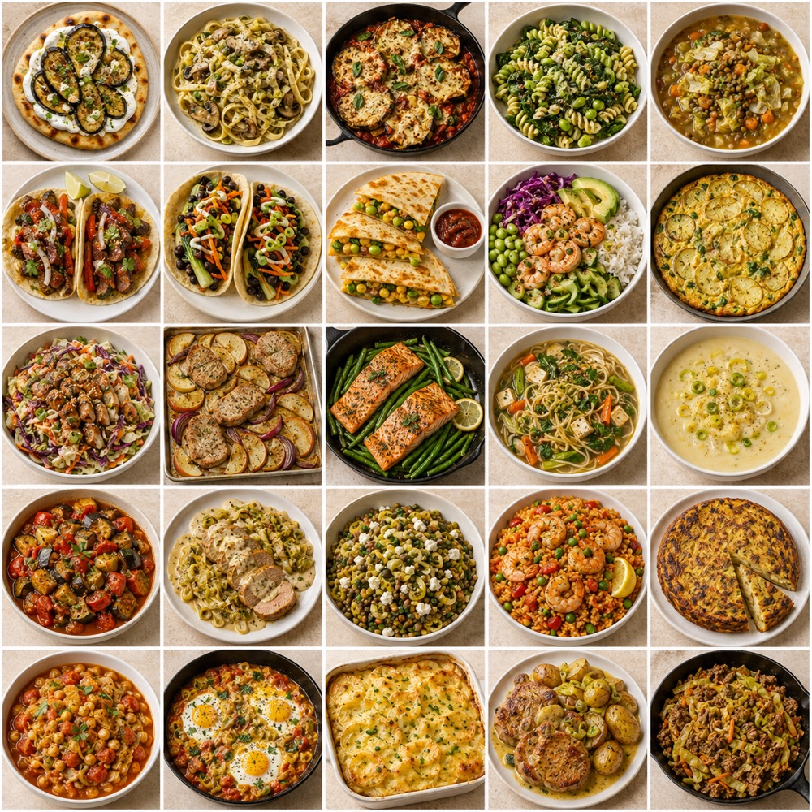
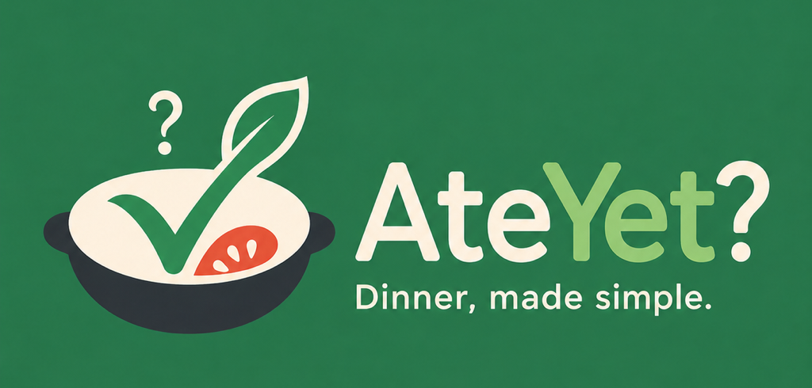
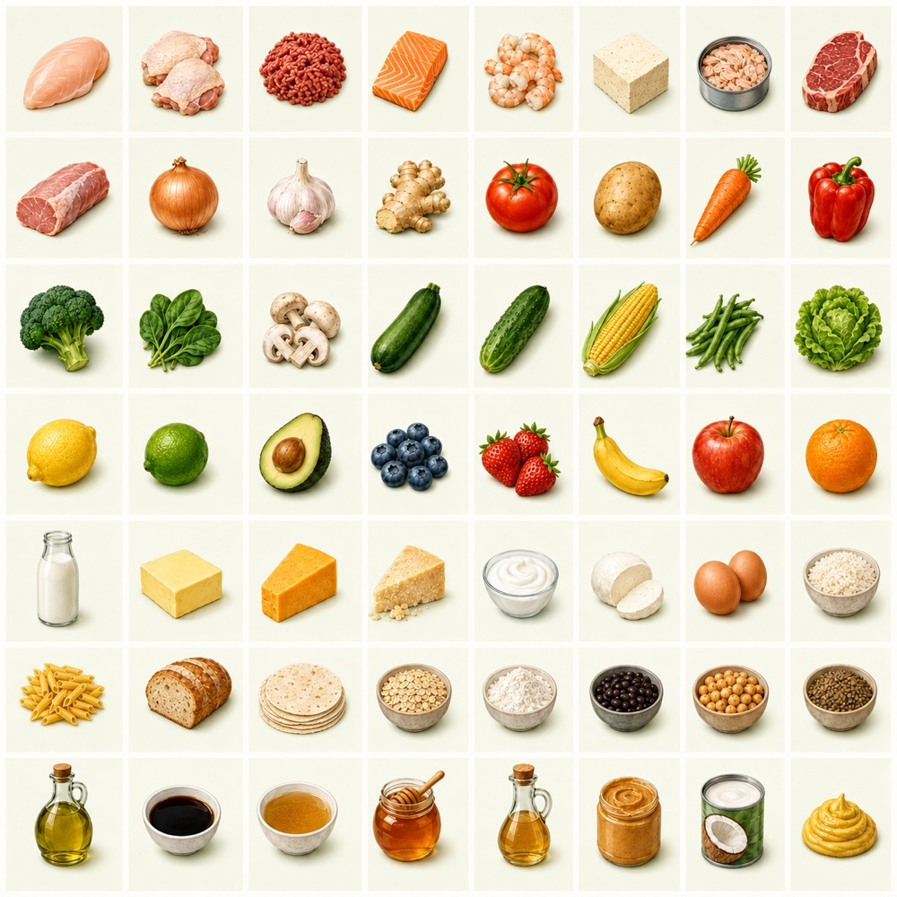
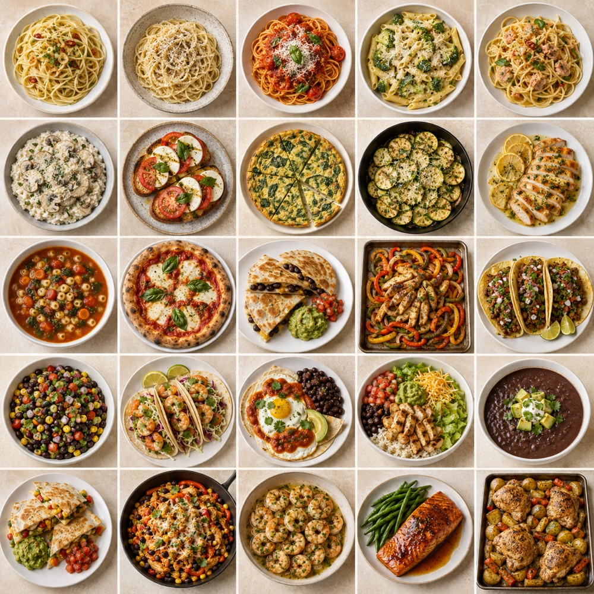

What can I make tonight?
Select your ingredients and get three ranked suggestions that use more of what you have and require less effort.
AteYet?
By ThinkSync StudioDinner, made simple
Choose what is in your kitchen and AteYet? finds practical recipes, builds a flexible dinner plan, and tells you exactly what is missing.


Three simple paths
AteYet? starts with the food you already have, then gives you useful choices without making dinner feel like a project.
Select your ingredients and get three ranked suggestions that use more of what you have and require less effort.
Build a three-to-seven-dinner plan with variety, practical swaps, and one combined grocery list.
Choose one ingredient to discover simple techniques and recipes, so good food is less likely to go to waste.

Start where you are
Pick the proteins, vegetables, grains, and pantry ingredients you have. Mark anything you especially want to use, set the number of people, and let AteYet? do the matching.
A practical recipe library
AteYet? includes 261 simple recipes across 16 cuisines. Suggestions account for what you have, what you enjoy, dietary preferences, time, and ease—then show only the choices that matter.

Private by design
AteYet? works without an account, advertising, analytics, cloud service, or live AI. Your ingredients, preferences, plans, notes, and cooking history stay on your device. Optional voice notes use on-device transcription.